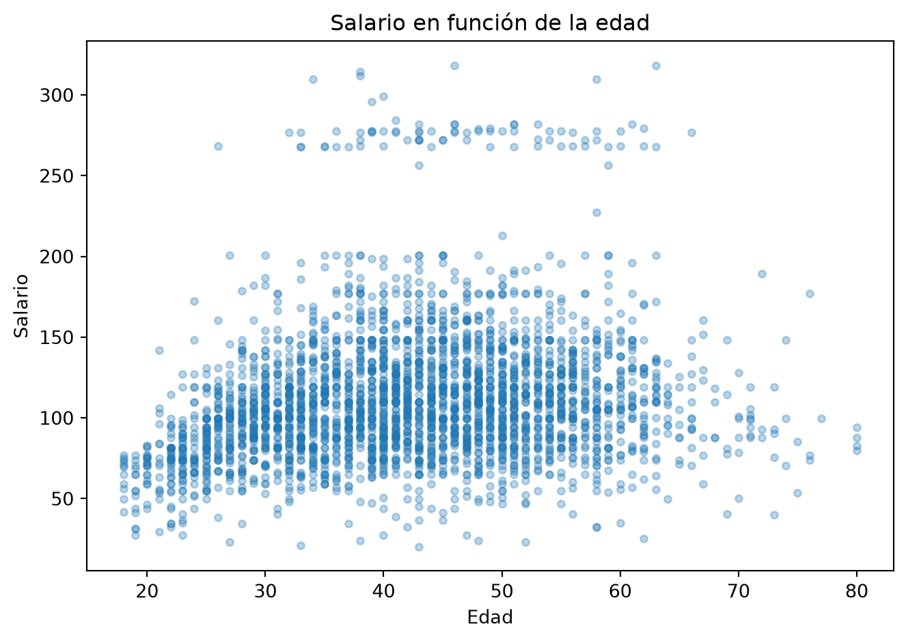
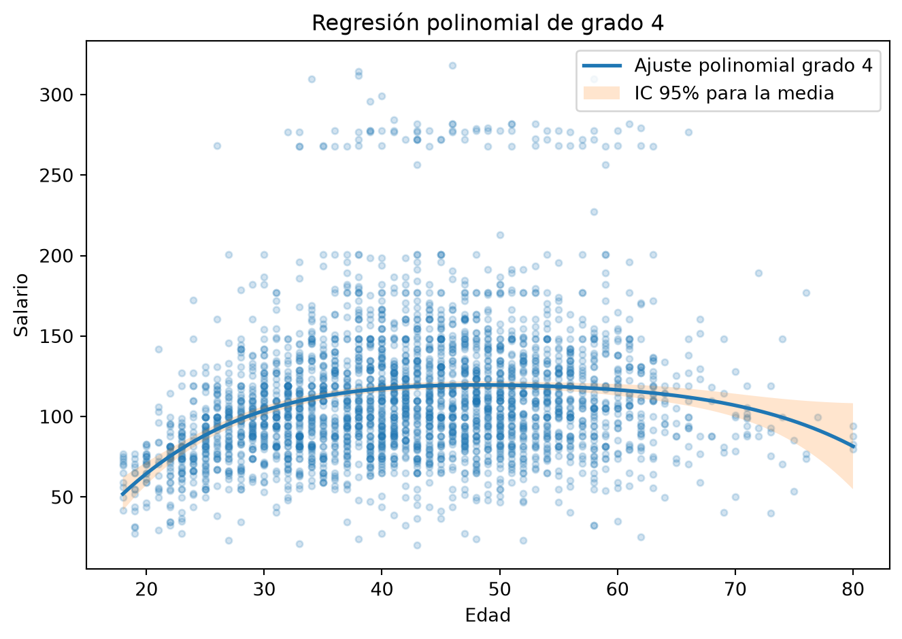
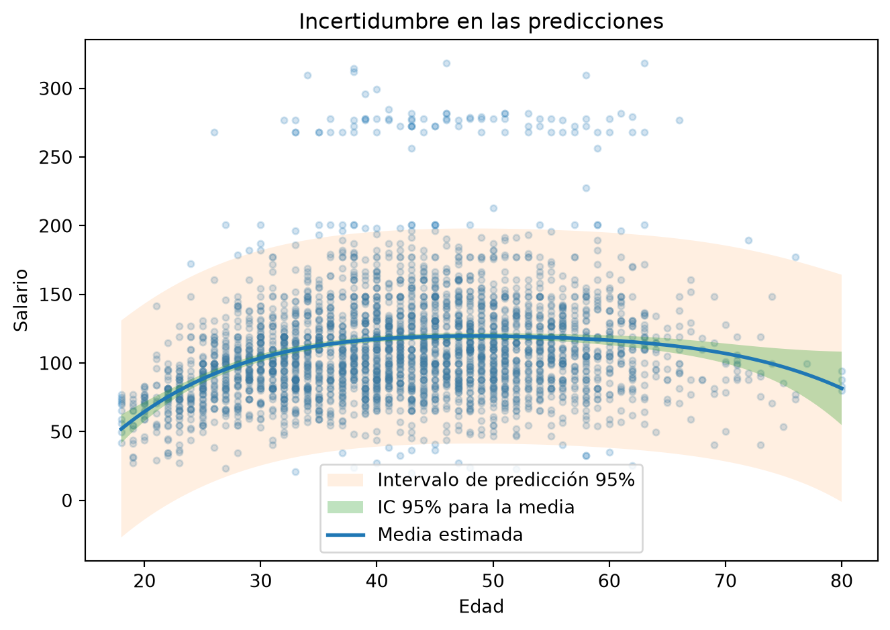
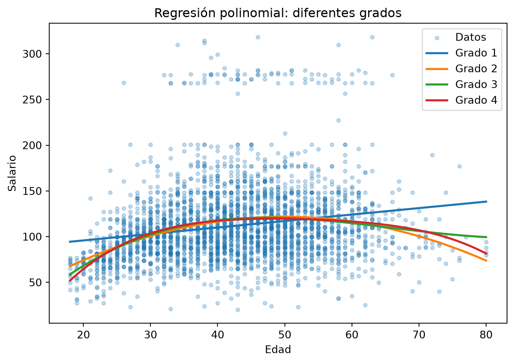
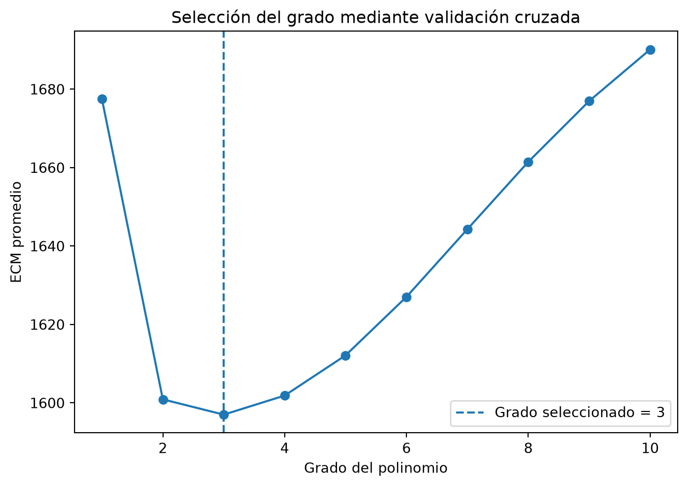
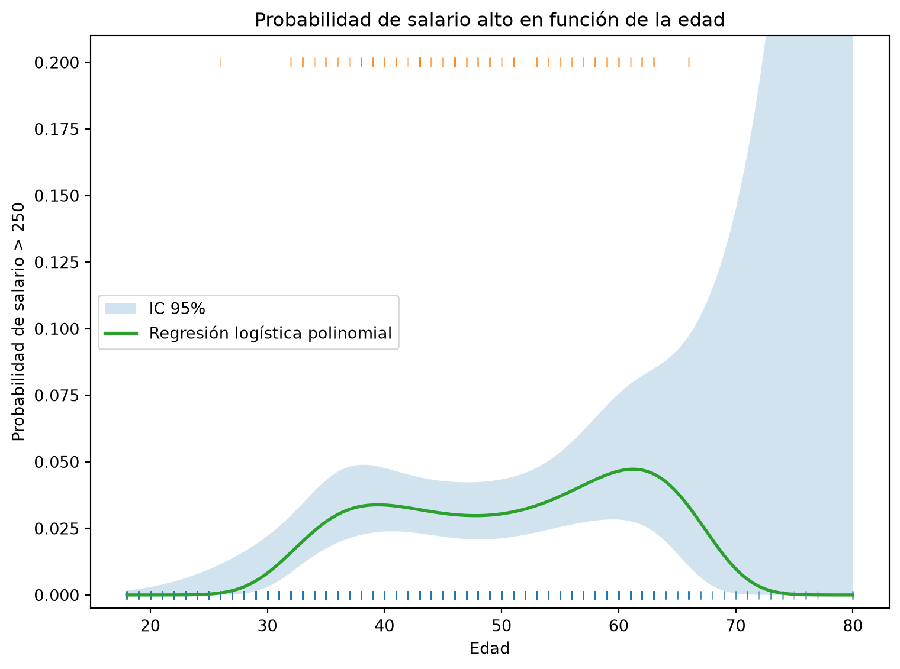

Código
import numpy as np
import pandas as pd
import matplotlib.pyplot as plt
import statsmodels.api as sm
from ISLP import load_data
from ISLP.models import ModelSpec as MS, poly, summarizeEn esta práctica utilizaremos conceptos de regresión lineal y regresión logística que ya han estudiado previamente. Antes de comenzar, recuerden algunas ideas fundamentales.
Regresión lineal. ¿Qué cantidad modelamos mediante una regresión lineal? Escriban formalmente el modelo para un único predictor \(X\).
Mínimos cuadrados. ¿Qué criterio utilizamos para estimar los coeficientes \(\beta_0,\beta_1,\ldots,\beta_p\) en una regresión lineal? Escriban la función que minimizamos y recuerden su formulación matricial.
Regresión logística. Si \(Y\in\{0,1\}\), ¿por qué no utilizamosdirectamente una regresión lineal para modelar \(P(Y=1\mid X=x)\)? ¿Qué transformación de la probabilidad utilizamos en regresión logística?
Linealidad. En los modelos anteriores, ¿qué significa realmente decir que un modelo es ``lineal’’? ¿Debe ser necesariamente una función lineal de los predictores?
No necesitan desarrollar demostraciones. El objetivo es recuperar las ideas que utilizaremos a lo largo de la práctica.
En regresión lineal modelamos la media condicional de \(Y\):
\[ E[Y\mid X] = \beta_0+\beta_1X_1+\cdots+\beta_pX_p. \]
Los coeficientes se estiman mediante mínimos cuadrados, minimizando
\[ \operatorname{RSS}(\boldsymbol{\beta}) = \sum_{i=1}^{n} \left( y_i-\beta_0-\sum_{j=1}^{p}\beta_jx_{ij} \right)^2. \]
En forma matricial,
\[ \hat{\boldsymbol{\beta}} = \arg\min_{\boldsymbol{\beta}} \left\| \mathbf y-\mathbf X\boldsymbol{\beta} \right\|_2^2. \]
Si \(\mathbf X^\top\mathbf X\) es invertible, la solución es
\[ \hat{\boldsymbol{\beta}} = (\mathbf X^\top\mathbf X)^{-1} \mathbf X^\top\mathbf y. \]
En regresión logística, para una respuesta \(Y\in\{0,1\}\), definimos
\[ p(X)=P(Y=1\mid X). \]
En lugar de modelar directamente \(p(X)\) mediante una recta, modelamos el log-odds:
\[ \log\left( \frac{p(X)}{1-p(X)} \right) = \beta_0+\beta_1X_1+\cdots+\beta_pX_p. \]
Finalmente, recuerden que un modelo es lineal cuando es lineal en sus parámetros. Por ejemplo,
\[ Y = \beta_0+\beta_1X+\beta_2X^2+\varepsilon \]
no es una recta como función de \(X\), pero sigue siendo un modelo lineal en los parámetros \(\beta_0,\beta_1,\beta_2\).
Esta última observación será precisamente el punto de partida de la regresión polinomial.
Al finalizar esta práctica podrán:
Esta práctica corresponde a la primera parte de la sección 7.8 del libro base, con algunas modificaciones y ejercicios adicionales.
Comenzaremos cargando las librerías necesarias.
import numpy as np
import pandas as pd
import matplotlib.pyplot as plt
import statsmodels.api as sm
from ISLP import load_data
from ISLP.models import ModelSpec as MS, poly, summarizeISLP.models?
En R, la función poly(age, 4) dentro de una fórmula como
wage ~ poly(age, 4)construye una base de polinomios ortogonales.
En esta práctica utilizaremos ModelSpec (importada como MS) junto con la función poly proporcionada por el paquete ISLP. Esto nos permite construir una base polinomial y, posteriormente, aplicar exactamente la misma transformación a nuevos datos cuando queramos realizar predicciones.
Más adelante utilizaremos también PolynomialFeatures de scikit-learn.
Tengan cuidado de no utilizar el nombre poly para guardar otros objetos, pues poly ya identifica a la función que importamos desde ISLP.models.
WageTrabajaremos con el conjunto de datos Wage, que contiene información sobre salarios y algunas características de trabajadores de la región del Atlántico medio de Estados Unidos.
Nos concentraremos inicialmente en dos variables:
age: edad del trabajador.wage: salario del trabajador.Nuestra pregunta inicial será:
¿Cómo cambia el salario esperado de una persona en función de su edad?
En una regresión lineal simple modelaríamos esta relación mediante
\[ E[\text{wage}\mid\text{age}] = \beta_0+\beta_1\text{age}. \]
Este modelo supone que el salario esperado cambia a una tasa constante con respecto a la edad.
Antes de aceptar esta suposición, exploremos los datos.
wage = load_data('Wage')
print(wage.shape)
wage[['age', 'wage']].describe()(3000, 11)| age | wage | |
|---|---|---|
| count | 3000.000000 | 3000.000000 |
| mean | 42.414667 | 111.703608 |
| std | 11.542406 | 41.728595 |
| min | 18.000000 | 20.085537 |
| 25% | 33.750000 | 85.383940 |
| 50% | 42.000000 | 104.921507 |
| 75% | 51.000000 | 128.680488 |
| max | 80.000000 | 318.342430 |
Antes de continuar, observen el resumen anterior.
El conjunto de datos contiene trabajadores con edades entre aproximadamente 18 y 80 años.
Los salarios presentan una variabilidad considerable y algunos valores son mucho mayores que la mayoría de las observaciones.
Al observar los cuartiles de age, vemos que una gran parte de las observaciones se concentra en edades intermedias. Por tanto, tenemos más información en esta región que cerca de los extremos del rango.
Esto será importante más adelante: las estimaciones del modelo suelen presentar mayor incertidumbre en regiones donde tenemos menos observaciones.
Visualicemos ahora ambas variables.
plt.figure(figsize=(7, 5))
plt.scatter(
wage['age'],
wage['wage'],
alpha=0.3,
s=15
)
plt.xlabel('Edad')
plt.ylabel('Salario')
plt.title('Salario en función de la edad')
plt.tight_layout()
plt.show()
Observen la nube de puntos.
La nube de puntos no sugiere una relación estrictamente lineal.
En términos generales, el salario parece aumentar durante las primeras etapas del rango de edades, pero este crecimiento no continúa a una tasa constante. Para edades mayores, la tendencia se estabiliza e incluso puede disminuir.
Por tanto, encontramos evidencia visual de curvatura y una recta podría ser demasiado restrictiva para representar la relación entre age y wage.
Esta observación no determina todavía qué grado de polinomio debemos utilizar; únicamente motiva considerar modelos más flexibles.
La gráfica sugiere que la relación entre age y wage no es completamente lineal. El salario tiende a aumentar con la edad hasta cierto punto y posteriormente la tendencia cambia.
Esto motiva utilizar un modelo más flexible.
En lugar de imponer
\[ E[Y\mid X=x] = \beta_0+\beta_1x, \]
podemos considerar
\[ E[Y\mid X=x] = \beta_0+\beta_1x+\beta_2x^2+\cdots+\beta_dx^d. \]
A este modelo lo llamamos regresión polinomial de grado \(d\).
Aunque la relación entre \(X\) y la respuesta ya no es una recta, observen que el modelo sigue siendo lineal en los parámetros
\[ \beta_0,\beta_1,\ldots,\beta_d. \]
Podemos pensar que simplemente hemos creado nuevos predictores:
\[ X,\quad X^2,\quad X^3,\quad\ldots,\quad X^d. \]
Por tanto, podemos seguir utilizando las herramientas de regresión lineal y estimar los parámetros mediante mínimos cuadrados ordinarios.
Las variables
\[ X,\quad X^2,\quad X^3,\quad\ldots \]
pueden estar fuertemente correlacionadas entre sí.
En lugar de trabajar directamente con la base
\[ 1,x,x^2,\ldots,x^d, \]
podemos utilizar otra base
\[ P_0(x),P_1(x),\ldots,P_d(x) \]
formada por polinomios ortogonales.
Los polinomios
\[ 1,x,x^2,\ldots,x^d \]
y una base de polinomios ortogonales de grado hasta \(d\) generan el mismo espacio de funciones polinomiales.
Por tanto, cambiar de base modifica los coeficientes que aparecen en la salida del modelo, pero no modifica el espacio de modelos que podemos ajustar ni, salvo diferencias numéricas, las predicciones obtenidas.
Comenzaremos utilizando un polinomio de grado 4:
\[ E[\text{wage}\mid\text{age}=x] = \beta_0+\beta_1x+\beta_2x^2+ \beta_3x^3+\beta_4x^4. \]
Construiremos una base polinomial utilizando poly() y ajustaremos el modelo mediante mínimos cuadrados ordinarios.
design_g4 = MS([poly('age', degree=4)])
X_g4 = design_g4.fit_transform(wage)
y = wage['wage']
modelo_g4 = sm.OLS(y, X_g4).fit()
summarize(modelo_g4)| coef | std err | t | P>|t| | |
|---|---|---|---|---|
| intercept | 111.7036 | 0.729 | 153.283 | 0.000 |
| poly(age, degree=4)[0] | 447.0679 | 39.915 | 11.201 | 0.000 |
| poly(age, degree=4)[1] | -478.3158 | 39.915 | -11.983 | 0.000 |
| poly(age, degree=4)[2] | 125.5217 | 39.915 | 3.145 | 0.002 |
| poly(age, degree=4)[3] | -77.9112 | 39.915 | -1.952 | 0.051 |
Observen la salida obtenida.
Además del intercepto aparecen cuatro términos correspondientes a la base polinomial de grado 4.
La significancia de los términos puede estudiarse mediante sus estadísticos y valores \(p\). Sin embargo, debemos tener cuidado con su interpretación.
Como utilizamos una base de polinomios ortogonales, los coeficientes no son directamente los coeficientes de
\[ x,\quad x^2,\quad x^3,\quad x^4. \]
Por ello, un coeficiente individual no debe interpretarse como ``el cambio en salario producido por aumentar la edad en una unidad’’.
Para interpretar el efecto de la edad resulta más útil estudiar la función ajustada completa
\[ \hat f(x) \]
o cantidades derivadas de ella, como su pendiente local.
Los coeficientes de esta tabla no se interpretan individualmente como en una regresión lineal simple.
La variable age entra al modelo a través de varias funciones base ortogonales simultáneamente. Por ello, los coeficientes corresponden a esas funciones base y no directamente a \(x,x^2,x^3,x^4\).
Una cantidad mucho más útil para interpretar el modelo es la curva ajustada completa
\[ \hat f(x)=\widehat{E[Y\mid X=x]}. \]
Para visualizar el modelo necesitamos evaluarlo en diferentes edades.
Construiremos una secuencia fina de valores que cubra todo el rango observado de age.
age_grid = np.linspace(
wage['age'].min(),
wage['age'].max(),
200
)
datos_pred = pd.DataFrame({
'age': age_grid
})
# design_g4 ya quedó "ajustado" (fit) al llamar fit_transform sobre wage;
# ahora solo transformamos los datos nuevos con la MISMA base ortogonal.
X_pred = design_g4.transform(datos_pred)
prediccion = modelo_g4.get_prediction(X_pred)
# IC al 95%
resumen_pred = prediccion.summary_frame(alpha=0.05)
resumen_pred.head()| mean | mean_se | mean_ci_lower | mean_ci_upper | obs_ci_lower | obs_ci_upper | |
|---|---|---|---|---|---|---|
| 0 | 51.931450 | 5.298268 | 41.542837 | 62.320064 | -27.018198 | 130.881099 |
| 1 | 54.031077 | 4.992907 | 44.241202 | 63.820952 | -24.842019 | 132.904173 |
| 2 | 56.081359 | 4.702471 | 46.860958 | 65.301760 | -22.723079 | 134.885797 |
| 3 | 58.083102 | 4.426735 | 49.403354 | 66.762851 | -20.659908 | 136.826113 |
| 4 | 60.037106 | 4.165482 | 51.869611 | 68.204602 | -18.651086 | 138.725299 |
Es importante utilizar
design_g4.transform(datos_pred)y no volver a ajustar la transformación.
La base polinomial fue construida utilizando los datos originales y debemos utilizar exactamente esa misma transformación para predecir sobre nuevos valores de age.
Para cada edad \(x_0\), el modelo produce una estimación
\[ \hat f(x_0) = \widehat{E[Y\mid X=x_0]}. \]
Además, podemos cuantificar la incertidumbre asociada a esta estimación.
Graficaremos un intervalo de confianza puntual del 95%.
plt.figure(figsize=(7, 5))
plt.scatter(
wage['age'],
wage['wage'],
alpha=0.2,
s=12
)
plt.plot(
age_grid,
resumen_pred['mean'],
lw=2,
label='Ajuste polinomial grado 4'
)
plt.fill_between(
age_grid,
resumen_pred['mean_ci_lower'],
resumen_pred['mean_ci_upper'],
alpha=0.2,
label='IC 95% para la media'
)
plt.xlabel('Edad')
plt.ylabel('Salario')
plt.title('Regresión polinomial de grado 4')
plt.legend()
plt.tight_layout()
plt.show()
La curva representa
\[ \widehat{E[\text{wage}\mid\text{age}=x]}. \]
La banda responde aproximadamente a la pregunta:
¿En qué rango estimamos que se encuentra el salario promedio de los trabajadores de edad \(x\)?
Observen también el ancho de la banda.
La banda de confianza no tiene el mismo ancho para todas las edades.
En general, es más estrecha en regiones donde tenemos una mayor concentración de observaciones y se ensancha hacia los extremos del rango de age.
La razón es que tenemos menos información para estimar la relación en esas regiones. En consecuencia, aumenta la incertidumbre asociada a
\[ \hat f(x). \]
Además, los modelos polinomiales pueden ser particularmente inestables cerca de los extremos del rango observado.
Existe una distinción importante entre estimar el salario promedio y predecir el salario de una persona individual.
Para una edad \(x_0\) podemos formular dos preguntas:
¿Dónde se encuentra el salario promedio de los trabajadores de edad \(x_0\)?
Queremos estimar
\[ E[Y\mid X=x_0]. \]
¿Qué salario podría tener un nuevo trabajador de edad \(x_0\)?
Ahora queremos predecir una nueva observación
\[ Y_{\text{nuevo}}\mid X=x_0. \]
El segundo intervalo debe incorporar no solamente la incertidumbre de \(\hat f(x_0)\), sino también la variabilidad individual representada por el término de error \(\varepsilon\).
Por esta razón, el intervalo de predicción es más ancho.
statsmodels proporciona ambos intervalos en summary_frame():
mean_ci_lower, mean_ci_upper: intervalo para la media.obs_ci_lower, obs_ci_upper: intervalo para una nueva observación.plt.figure(figsize=(7, 5))
plt.scatter(
wage['age'],
wage['wage'],
alpha=0.2,
s=12
)
# Intervalo de predicción
plt.fill_between(
age_grid,
resumen_pred['obs_ci_lower'],
resumen_pred['obs_ci_upper'],
alpha=0.12,
label='Intervalo de predicción 95%'
)
# Intervalo para la media
plt.fill_between(
age_grid,
resumen_pred['mean_ci_lower'],
resumen_pred['mean_ci_upper'],
alpha=0.30,
label='IC 95% para la media'
)
# Curva
plt.plot(
age_grid,
resumen_pred['mean'],
lw=2,
label='Media estimada'
)
plt.xlabel('Edad')
plt.ylabel('Salario')
plt.title('Incertidumbre en las predicciones')
plt.legend()
plt.tight_layout()
plt.show()
Observen la diferencia entre ambas bandas.
Aunque podemos estimar razonablemente bien la tendencia promedio del salario con respecto a la edad, existe una variabilidad considerable entre los salarios de personas de una misma edad.
Por ello, conocer la edad puede ser útil para describir la tendencia media, pero no necesariamente permite predecir con gran precisión el salario de una persona particular.
Hasta ahora elegimos \(d=4\). Sin embargo, esta elección fue arbitraria.
Comparemos modelos de grados
\[ d=1,2,3,4. \]
Al aumentar \(d\) aumenta la flexibilidad del modelo.
plt.figure(figsize=(7, 5))
plt.scatter(
wage['age'],
wage['wage'],
alpha=0.25,
s=12,
label='Datos'
)
for d in range(1, 5):
design_d = MS([poly('age', degree=d)])
X_d = design_d.fit_transform(wage)
modelo_d = sm.OLS(
wage['wage'],
X_d
).fit()
X_grid_d = design_d.transform(datos_pred)
pred_d = modelo_d.predict(X_grid_d)
plt.plot(
age_grid,
pred_d,
lw=2,
label=f'Grado {d}'
)
plt.xlabel('Edad')
plt.ylabel('Salario')
plt.title('Regresión polinomial: diferentes grados')
plt.legend()
plt.tight_layout()
plt.show()
Observen las cuatro curvas y discutan:
El modelo de grado 1 únicamente puede representar una recta y, por tanto, no1 puede capturar adecuadamente el cambio de tendencia que observamos en los datos.
Al pasar de grado 1 a grado 2 aparece curvatura, lo que permite representar un aumento del salario seguido de una estabilización o disminución.
Los grados 3 y 4 permiten introducir formas todavía más flexibles. Sin embargo, visualmente las mejoras son menos evidentes que al pasar de una recta a un modelo cuadrático.
No sería conveniente aumentar el grado indefinidamente. Cada término adicional aumenta la flexibilidad del modelo, pero también puede aumentar su varianza y favorecer el sobreajuste.
Por ello necesitamos algún criterio para decidir si la flexibilidad adicional está justificada.
Un grado demasiado bajo puede producir subajuste, mientras que un grado innecesariamente alto puede aumentar la variabilidad y producir comportamientos poco estables.
Necesitamos, por tanto, algún criterio para seleccionar \(d\).
Estudiaremos dos perspectivas diferentes:
Los modelos polinomiales tienen una estructura natural de anidamiento.
Por ejemplo,
\[ \begin{aligned} d=1 &: \quad \beta_0+\beta_1x,\\ d=2 &: \quad \beta_0+\beta_1x+\beta_2x^2,\\ d=3 &: \quad \beta_0+\beta_1x+\beta_2x^2+\beta_3x^3. \end{aligned} \]
El modelo de grado \(d-1\) está contenido dentro del modelo de grado \(d\).
Por ello podemos preguntar si agregar el siguiente grado produce una mejora estadísticamente detectable.
Al comparar grados \(d-1\) y \(d\), planteamos
\[ H_0: \text{el modelo de grado }d-1\text{ es suficiente} \]
contra
\[ H_1: \text{el término adicional mejora el ajuste}. \]
Ajustemos modelos de grados 1 a 5.
modelos = {}
for d in range(1, 6):
design_d = MS([poly('age', degree=d)])
X_d = design_d.fit_transform(wage)
modelos[d] = sm.OLS(
wage['wage'],
X_d
).fit()
tabla_anova = sm.stats.anova_lm(
modelos[1],
modelos[2],
modelos[3],
modelos[4],
modelos[5]
)
tabla_anova| df_resid | ssr | df_diff | ss_diff | F | Pr(>F) | |
|---|---|---|---|---|---|---|
| 0 | 2998.0 | 5.022216e+06 | 0.0 | NaN | NaN | NaN |
| 1 | 2997.0 | 4.793430e+06 | 1.0 | 228786.010128 | 143.593107 | 2.363850e-32 |
| 2 | 2996.0 | 4.777674e+06 | 1.0 | 15755.693664 | 9.888756 | 1.679202e-03 |
| 3 | 2995.0 | 4.771604e+06 | 1.0 | 6070.152124 | 3.809813 | 5.104620e-02 |
| 4 | 2994.0 | 4.770322e+06 | 1.0 | 1282.563017 | 0.804976 | 3.696820e-01 |
Cada fila compara un modelo con el inmediatamente anterior.
Por ejemplo:
Analicen la tabla y respondan:
La primera comparación permite evaluar si pasar de un modelo lineal a uno cuadrático mejora significativamente el ajuste.
Si el valor \(p\) correspondiente a esta comparación es pequeño, encontramos evidencia de que el modelo lineal es insuficiente.
Después debemos continuar leyendo las comparaciones de manera secuencial:
\[ d=1\rightarrow2,\qquad d=2\rightarrow3,\qquad d=3\rightarrow4,\qquad\ldots \]
Mientras el valor \(p\) sea suficientemente pequeño, encontramos evidencia de que agregar flexibilidad mejora el ajuste.
Cuando agregar el siguiente término deja de producir una mejora estadísticamente significativa, no encontramos evidencia suficiente para justificar ese aumento de complejidad.
Por tanto, el grado seleccionado corresponde al modelo anterior a la primera ampliación que deja de aportar una mejora significativa.
La comparación es válida porque los modelos utilizan las mismas observaciones y están anidados.
La pregunta central no es cuál modelo tiene el valor \(p\) más pequeño, sino hasta qué punto agregar flexibilidad sigue aportando evidencia de una mejora en el ajuste.
Regla de decisión: se recorre la tabla de arriba hacia abajo y se elige el primer grado \(d\) tal que el valor \(p\) de agregar el término \(d+1\) ya no sea significativo (por ejemplo, mayor a 0.05).
La prueba \(F\) anidada es válida aquí porque los modelos comparados usan exactamente los mismos datos y difieren solo en el grado del polinomio. Si el modelo incluyera otros predictores (por ejemplo, education), la comparación por ANOVA seguiría siendo válida y es preferible a mirar los valores \(t\) individuales de los términos de poly, cuya interpretación aislada no es directa por tratarse de una base ortogonal.
La comparación anterior plantea una pregunta inferencial.
Ahora plantearemos una pregunta diferente:
¿Qué grado produce mejores predicciones para observaciones que el modelo no utilizó durante el ajuste?
Para responder utilizaremos validación cruzada de 10 particiones.
Para cada grado \(d\):
El grado con menor error de validación cruzada será nuestro candidato desde una perspectiva predictiva.
from sklearn.model_selection import KFold
from sklearn.preprocessing import PolynomialFeatures
from sklearn.linear_model import LinearRegression
from sklearn.metrics import mean_squared_error
X = wage[['age']].values
y_arr = wage['wage'].values
kf = KFold(
n_splits=10,
shuffle=True,
random_state=42
)
grados = range(1, 11)
ecm_promedio = []
for d in grados:
errores_fold = []
transformador_poly = PolynomialFeatures(
degree=d,
include_bias=False
)
for idx_train, idx_test in kf.split(X):
X_train_poly = transformador_poly.fit_transform(
X[idx_train]
)
X_test_poly = transformador_poly.transform(
X[idx_test]
)
modelo_cv = LinearRegression().fit(
X_train_poly,
y_arr[idx_train]
)
pred = modelo_cv.predict(X_test_poly)
errores_fold.append(
mean_squared_error(
y_arr[idx_test],
pred
)
)
ecm_promedio.append(
np.mean(errores_fold)
)
d_optimo = list(grados)[
int(np.argmin(ecm_promedio))
]
print(
f'Grado óptimo según validación cruzada: {d_optimo}'
)Grado óptimo según validación cruzada: 3En esta sección PolynomialFeatures genera las potencias ordinarias
\[ x,x^2,\ldots,x^d, \]
mientras que anteriormente utilizamos una base de polinomios ortogonales.
En mínimos cuadrados ordinarios, ambas bases generan el mismo espacio de polinomios de grado menor o igual que \(d\) y, salvo diferencias numéricas, producen las mismas predicciones.
Aquí utilizamos PolynomialFeatures porque se integra de manera sencilla con el flujo de validación cruzada de scikit-learn.
plt.figure(figsize=(7, 5))
plt.plot(
list(grados),
ecm_promedio,
marker='o'
)
plt.axvline(
d_optimo,
linestyle='--',
label=f'Grado seleccionado = {d_optimo}'
)
plt.xlabel('Grado del polinomio')
plt.ylabel('ECM promedio')
plt.title('Selección del grado mediante validación cruzada')
plt.legend()
plt.tight_layout()
plt.show()
Observen la gráfica.
El criterio de validación cruzada selecciona el grado que minimiza el error cuadrático medio promedio:
\[ d_{\mathrm{CV}} = \arg\min_d \operatorname{ECM}_{\mathrm{CV}}(d). \]
El valor concreto aparece en la salida de
d_optimoy corresponde al mínimo de la gráfica.
Sin embargo, también conviene observar la magnitud de las diferencias entre los errores. Si varios grados presentan errores muy similares, una pequeña diferencia en el ECM no constituye necesariamente una razón fuerte para elegir el modelo más complejo.
El resultado tampoco tiene que coincidir exactamente con el obtenido mediante ANOVA. Los dos procedimientos responden a preguntas diferentes: ANOVA evalúa evidencia inferencial al comparar modelos anidados, mientras que la validación cruzada evalúa desempeño predictivo fuera de muestra.
Los dos procedimientos utilizados no responden exactamente a la misma pregunta.
La comparación mediante ANOVA es un procedimiento inferencial: pregunta si agregar complejidad produce una mejora estadísticamente detectable bajo los supuestos del modelo.
La validación cruzada es un procedimiento predictivo: evalúa directamente qué tan bien generaliza cada modelo a observaciones que no fueron utilizadas para ajustarlo.
Por ello, ambos procedimientos pueden sugerir grados diferentes sin que uno de los dos sea necesariamente incorrecto.
En el bloque anterior utilizamos deliberadamente
transformador_polyy no
polypara almacenar el objeto PolynomialFeatures.
La razón es que poly ya fue importada desde ISLP.models.
Si escribiéramos, por ejemplo,
poly = PolynomialFeatures(degree=4)habríamos reemplazado el nombre de la función original. Posteriormente, una instrucción como
poly('age', degree=4)intentaría llamar al objeto PolynomialFeatures como si fuera la función de ISLP, produciendo un error.
En la práctica, ambos enfoques (ANOVA y validación cruzada) suelen sugerir un grado bajo (2, 3 o 4). Coexisten en la literatura porque ANOVA da una justificación inferencial clásica basada en la teoría de mínimos cuadrados, mientras que la validación cruzada es más robusta cuando no se cumplen exactamente los supuestos de normalidad y homocedasticidad de los errores.
Hasta ahora hemos trabajado con wage como una variable respuesta cuantitativa. Consideremos ahora una pregunta diferente:
¿Cómo cambia con la edad la probabilidad de que una persona tenga un salario superior a 250 mil dólares?
Definimos una nueva variable respuesta binaria:
\[ Y= \begin{cases} 1, & \text{si } \texttt{wage}>250,\\ 0, & \text{si } \texttt{wage}\leq 250. \end{cases} \]
Por tanto, ahora queremos modelar la probabilidad
\[ p(x) = P(Y=1\mid X=x) = P(\texttt{wage}>250\mid \texttt{age}=x). \]
En una regresión logística simple modelamos el logaritmo de los odds mediante una relación lineal:
\[ \log\left( \frac{p(x)}{1-p(x)} \right) = \beta_0+\beta_1x. \]
La cantidad
\[ \frac{p(x)}{1-p(x)} \]
se conoce como los odds, mientras que
\[ \log\left( \frac{p(x)}{1-p(x)} \right) \]
es el logit o log-odds.
En este modelo se supone que el log-odds cambia linealmente con respecto a \(x\).
Sin embargo, al igual que en regresión lineal, esta suposición puede ser demasiado restrictiva.
Podemos introducir términos polinomiales y considerar
\[ \log\left( \frac{p(x)}{1-p(x)} \right) = \beta_0+\beta_1x+\beta_2x^2+\cdots+\beta_dx^d. \]
Esta es una regresión logística polinomial.
La idea es exactamente la misma que utilizamos antes:
\[ X \longmapsto (X,X^2,\ldots,X^d). \]
Lo que cambia ahora es el tipo de variable respuesta y, por tanto, el modelo utilizado para relacionar los predictores con la respuesta.
Construimos primero la variable binaria salario_alto.
wage['salario_alto'] = (
wage['wage'] > 250
).astype(int)
wage['salario_alto'].value_counts()salario_alto
0 2921
1 79
Name: count, dtype: int64Observen las frecuencias obtenidas.
Las observaciones con salario_alto = 1 representan una proporción pequeña del conjunto de datos. Por tanto, tener un salario superior a 250 es un evento poco frecuente y las dos clases están desbalanceadas.
Esto explica por qué las probabilidades estimadas que veremos en la gráfica son considerablemente menores que \(0.5\).
Esta exploración es importante porque la proporción de observaciones con \(Y=1\) afecta la escala de las probabilidades que veremos posteriormente.
GLM con familia binomial?En la regresión polinomial anterior utilizamos mínimos cuadrados ordinarios mediante sm.OLS() porque la respuesta wage era cuantitativa.
Ahora la variable respuesta toma únicamente los valores
\[ Y\in\{0,1\}. \]
Por esta razón utilizaremos un modelo lineal generalizado, o GLM por sus siglas en inglés.
En statsmodels escribimos:
sm.GLM(
y,
X,
family=sm.families.Binomial()
)La opción
family=sm.families.Binomial()indica que la variable respuesta sigue una distribución binomial.
Para una observación individual, esto equivale al caso Bernoulli:
\[ Y_i\sim\operatorname{Bernoulli}(p_i), \]
donde
\[ P(Y_i=1)=p_i \]
y
\[ P(Y_i=0)=1-p_i. \]
Además, statsmodels utiliza por defecto la función de enlace logit para la familia binomial. Por tanto, el modelo que se ajusta tiene la forma
\[ \log\left( \frac{p_i}{1-p_i} \right) = \eta_i, \]
donde \(\eta_i\) es el predictor lineal.
En nuestro caso, como utilizaremos un polinomio de grado 4 en age,
\[ \eta_i = \beta_0 +\beta_1P_1(\texttt{age}_i) +\beta_2P_2(\texttt{age}_i) +\beta_3P_3(\texttt{age}_i) +\beta_4P_4(\texttt{age}_i), \]
donde \(P_1,\ldots,P_4\) son los polinomios de la base ortogonal construida por ISLP.models.poly.
La opción
family=sm.families.Binomial()no se utiliza porque el modelo sea polinomial.
Se utiliza porque la variable respuesta es binaria.
La parte polinomial viene de
poly('age', degree=4)mientras que la familia binomial determina cómo se modela la variable respuesta.
Utilizaremos una base de polinomios ortogonales de grado 4, igual que en el ejemplo anterior de regresión polinomial.
grado = 4
design_logit = MS([
poly('age', degree=grado)
])
design_logit = design_logit.fit(wage)
X_logit = design_logit.transform(wage)
y_logit = wage['salario_alto']La matriz X_logit contiene el intercepto y las funciones base polinomiales asociadas a age.
Aunque el modelo es no lineal respecto a age, sigue siendo lineal respecto a los coeficientes del predictor lineal.
Ajustamos ahora el modelo.
modelo_logit = sm.GLM(
y_logit,
X_logit,
family=sm.families.Binomial()
).fit()
summarize(modelo_logit)| coef | std err | z | P>|z| | |
|---|---|---|---|---|
| intercept | -4.3012 | 0.345 | -12.457 | 0.000 |
| poly(age, degree=4)[0] | 71.9642 | 26.133 | 2.754 | 0.006 |
| poly(age, degree=4)[1] | -85.7729 | 35.929 | -2.387 | 0.017 |
| poly(age, degree=4)[2] | 34.1626 | 19.697 | 1.734 | 0.083 |
| poly(age, degree=4)[3] | -47.4008 | 24.105 | -1.966 | 0.049 |
Los coeficientes se estiman mediante máxima verosimilitud, no mediante mínimos cuadrados.
El modelo ajustado tiene la forma
\[ \log\left( \frac{\hat p(x)}{1-\hat p(x)} \right) = \hat\beta_0 +\hat\beta_1P_1(x) +\cdots +\hat\beta_4P_4(x). \]
Sin embargo, normalmente nos interesa más interpretar la probabilidad estimada
\[ \hat p(x) = P(\texttt{wage}>250\mid\texttt{age}=x) \]
que los coeficientes individuales de la base ortogonal.
Para visualizar cómo cambia la probabilidad con la edad, evaluaremos el modelo en una secuencia fina de edades.
age_grid = np.linspace(
wage['age'].min(),
wage['age'].max(),
200
)
datos_pred_logit = pd.DataFrame({
'age': age_grid
})
X_pred_logit = design_logit.transform(
datos_pred_logit
)
pred_logit = modelo_logit.get_prediction(
X_pred_logit
)
resumen_logit = pred_logit.summary_frame(
alpha=0.05
)
resumen_logit.head()| mean | mean_se | mean_ci_lower | mean_ci_upper | |
|---|---|---|---|---|
| 0 | 9.826349e-09 | 6.037272e-08 | 5.789509e-14 | 0.001665 |
| 1 | 1.900428e-08 | 1.113108e-07 | 1.964454e-13 | 0.001835 |
| 2 | 3.598553e-08 | 2.008033e-07 | 6.402190e-13 | 0.002019 |
| 3 | 6.674401e-08 | 3.545879e-07 | 2.005727e-12 | 0.002216 |
| 4 | 1.213091e-07 | 6.131647e-07 | 6.045581e-12 | 0.002428 |
La columna mean contiene la probabilidad estimada
\[ \hat p(x), \]
mientras que mean_ci_lower y mean_ci_upper contienen los límites del intervalo de confianza puntual del 95% para esa probabilidad.
Graficaremos:
salario_alto = 0 en la parte inferior;salario_alto = 1 en la parte superior;prob = resumen_logit['mean']
ic_lower = resumen_logit['mean_ci_lower']
ic_upper = resumen_logit['mean_ci_upper']
plt.figure(figsize=(8, 6))
# Observaciones con wage <= 250
mask_bajo = wage['salario_alto'] == 0
plt.plot(
wage.loc[mask_bajo, 'age'],
np.zeros(mask_bajo.sum()),
'|',
alpha=0.25,
markersize=5
)
# Observaciones con wage > 250
mask_alto = wage['salario_alto'] == 1
plt.plot(
wage.loc[mask_alto, 'age'],
np.repeat(0.20, mask_alto.sum()),
'|',
alpha=0.45,
markersize=6
)
# Banda de confianza del 95%
plt.fill_between(
age_grid,
ic_lower,
ic_upper,
alpha=0.20,
label='IC 95%'
)
# Probabilidad estimada
plt.plot(
age_grid,
prob,
linewidth=2,
label='Regresión logística polinomial'
)
plt.xlabel('Edad')
plt.ylabel('Probabilidad de salario > 250')
plt.title(
'Probabilidad de salario alto en función de la edad'
)
plt.ylim(-0.005, 0.21)
plt.legend()
plt.tight_layout()
plt.show()
La curva representa
\[ \widehat{ P(\texttt{wage}>250\mid\texttt{age}=x) }. \]
Observen que las probabilidades estimadas son pequeñas. Esto es consistente con el hecho de que tener un salario superior a 250 es un evento poco frecuente en este conjunto de datos.
Analicen la forma de la curva:
age podría representar adecuadamente esta forma?La probabilidad estimada no cambia de manera monótona con la edad.
El modelo muestra una región en la que
\[ P(\texttt{wage}>250\mid\texttt{age}=x) \]
aumenta con la edad, alcanza valores relativamente altos en edades intermedias y posteriormente disminuye.
Una regresión logística con un único término lineal,
\[ \log\left( \frac{p(x)}{1-p(x)} \right) = \beta_0+\beta_1x, \]
sería más restrictiva, ya que obliga al log-odds a ser una función lineal de la edad.
La expansión polinomial permite que el log-odds cambie de forma no lineal y, por tanto, que la probabilidad estimada tenga una forma más flexible.
En una regresión logística simple tendríamos
\[ \log\left( \frac{p(x)}{1-p(x)} \right) = \beta_0+\beta_1x. \]
Esto obliga al log-odds a cambiar linealmente con la edad.
Al utilizar un polinomio,
\[ \log\left( \frac{p(x)}{1-p(x)} \right) = \beta_0+\beta_1x+\cdots+\beta_dx^d, \]
permitimos que el log-odds, y por tanto la probabilidad \(p(x)\), presente una forma mucho más flexible.
La regresión logística ya produce una relación no lineal entre el predictor lineal \(\eta\) y la probabilidad \(p\) debido a la función logística.
Aquí estamos introduciendo una segunda fuente de flexibilidad: permitimos que el predictor lineal \(\eta\) sea una función polinomial de age.
Observen que la probabilidad estimada aumenta con la edad hasta alrededor de los 40-50 años y después disminuye, de forma consistente con lo observado en la regresión polinomial de la variable cuantitativa wage.
Podemos resumir ambos modelos utilizando la misma idea de expansión del predictor.
Cuando \(Y\) es cuantitativa, utilizamos regresión polinomial:
\[ E[Y\mid X] = \beta_0+\beta_1X+\cdots+\beta_dX^d. \]
En nuestro ejemplo,
\[ Y=\texttt{wage}. \]
Cuando \(Y\) es binaria, utilizamos regresión logística polinomial:
\[ \log\left( \frac{p(X)}{1-p(X)} \right) = \beta_0+\beta_1X+\cdots+\beta_dX^d. \]
En nuestro ejemplo,
\[ Y=I(\texttt{wage}>250). \]
En ambos casos aplicamos la transformación
\[ X \longmapsto (X,X^2,\ldots,X^d). \]
La diferencia principal está en qué cantidad modelamos:
\[ \text{Regresión polinomial} \quad\longrightarrow\quad E[Y\mid X], \]
mientras que
\[ \text{Regresión logística polinomial} \quad\longrightarrow\quad \log\left( \frac{p(X)}{1-p(X)} \right). \]
La idea fundamental es la misma: introducir flexibilidad mediante transformaciones de los predictores.
Ajusten, para
\[ d=1,\ldots,8, \]
el modelo
MS([poly('age', degree=d)])y obtengan el AIC de cada modelo mediante
modelo.aicGrafiquen el AIC contra \(d\).
Repitan el análisis utilizando year en lugar de age.
Ajusten modelos polinomiales de distintos grados y construyan una gráfica que permita comparar los ajustes.
¿Encuentran evidencia de una relación no lineal igual de fuerte que la observada para age?
Justifiquen su respuesta utilizando tanto la gráfica como los resultados de los modelos.
Ajusten un modelo que incluya
poly('age', degree=3)y la variable categórica
educationsin transformar.
Pueden construir la especificación mediante
MS([
poly('age', degree=3),
'education'
])Interpreten brevemente el coeficiente asociado a uno de los niveles de education.
¿Qué representa ese coeficiente cuando mantenemos constante el efecto de la edad?
Supongan que, durante la sección de validación cruzada, hubieran escrito
poly = PolynomialFeatures(degree=4)en lugar de utilizar el nombre transformador_poly.
Sin ejecutar código:
La tabla producida por
summarize(modelo_g4)muestra los coeficientes correspondientes a una base de polinomios ortogonales.
Expliquen por qué esta tabla no permite responder directamente:
¿Cuál es el cambio esperado en el salario cuando la edad aumenta un año?
¿Qué cantidad relacionada con la curva
\[ \hat f(x) \]
deberían estudiar para responder esta pregunta?
¿Esperarían que ese efecto fuera el mismo para una persona de 25 años que para una de 60 años? Justifiquen.